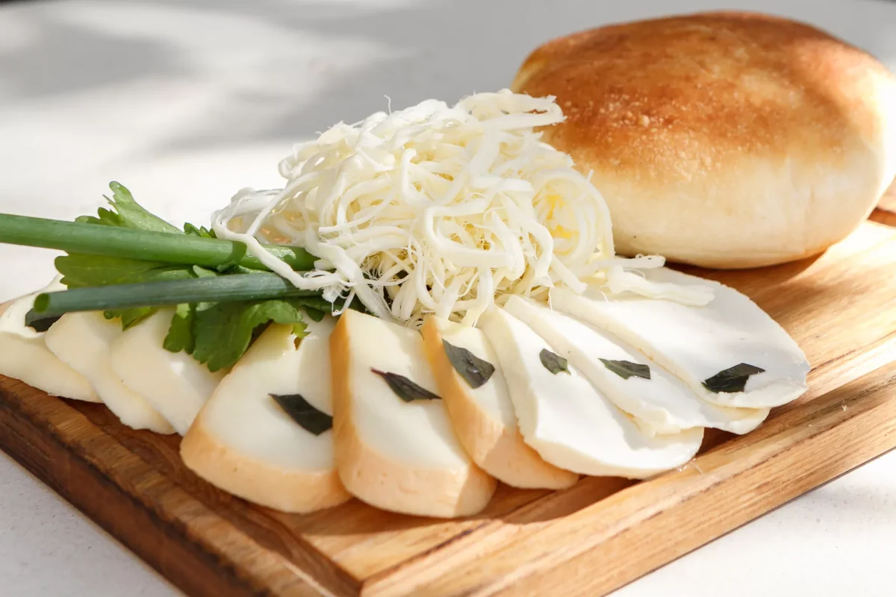
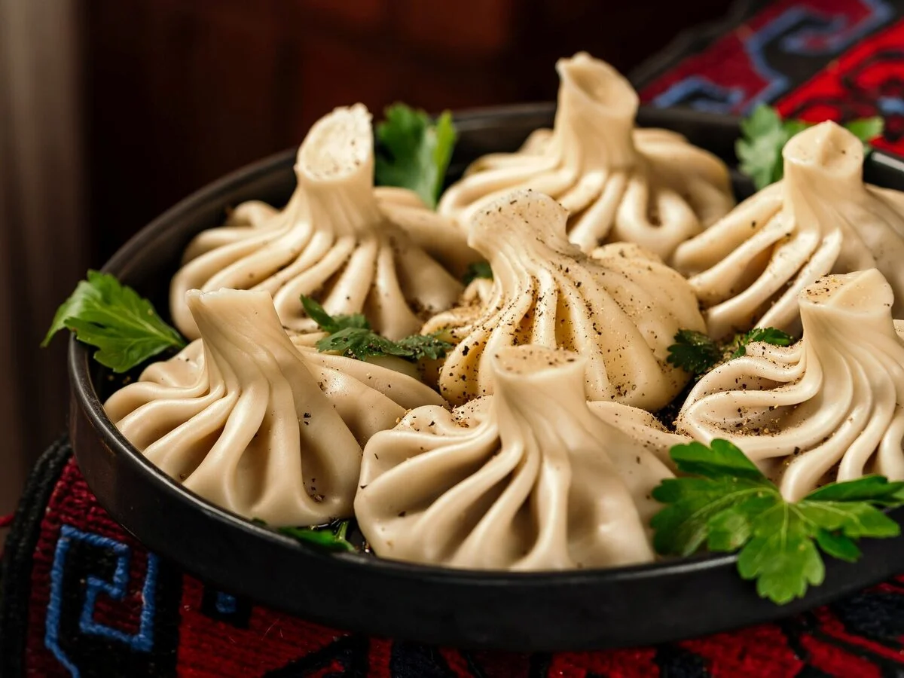
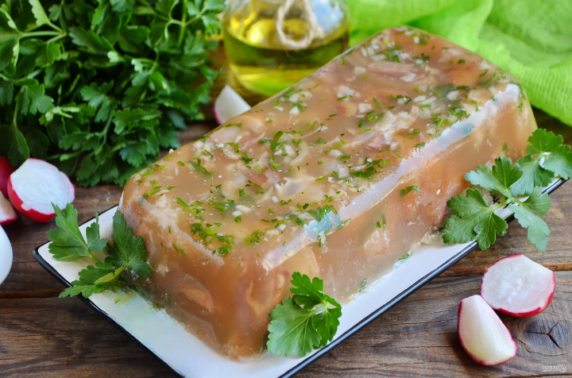

Грузинская кухня занимает заслуженное место на кулинарном Олимпе. Грузинские рецепты гоми, лобио, харчо, чахохбили, чанахи и многие другие давно готовятся за пределами Грузии.
Культура питания в Грузии ярко проявляется во время застолья под названием супра, где предлагается большой ассортимент национальных блюд и много вина. Такое действо сопровождается национальными танцами, хоровым пением и может продолжаться часами. Во время супры выбирается тамада, который и руководит всем мероприятием.
 Сулугуни (სულუგუნი) - грузинский сыр, по текстуре похожий на моцареллу. Он соленый, тягучий, разделяется на «ниточки». Его едят просто так или добавляют в различные блюда (например, хачапури).
Аналогом грузинского сыра сулугуни в русской кухне можно считать адыгейский сыр. Адыгейский сыр — это мягкий сывороточный сыр, обладающий кисломолочным вкусом и творожистой консистенцией. Богат белками и кальцием. Относится к группе мягких сыров без созревания. Вырабатывается из пастеризованного молока с использованием кисломолочной сыворотки для осаждения белков молока. Родиной адыгейского сыра, как понятно из названия, являются предгорья и горные района Кавказа.
 Хинкали (ხინკალი) – это вареное мясо в тесте, аналог русских пельменей. Есть хинкали нужно исключительно руками, держа их за хвостики. В каждом регионе они готовятся по-разному и с разными начинками. Сочные крупные "пельмени" с мясом и зеленью, посыпанные черным молотым перцем. В Грузии их подают в качестве самостоятельного блюда, а сами хинкали принято отправлять в рот руками. Блюдо украшают веточкой зелени, подают с различными соусами.
В качестве примера аналогичного блюда можно привести пельмени. Пельмени — блюдо, изготавливаемое из пресного теста с начинкой из рубленного мяса или рыбы, приготовленное из пшеничной муки, яйца, соли и специй. Распространёно среди народов бывшего Советского союза, в том числе в русской, удмуртской, коми и некоторых других национальных кухнях финно-угорских народов.
 Мужужи (მუჟუჟი) – грузинский вариант русского холодца, который готовят из свинины - довольно незатейливое, но очень вкусное блюдо. Для приготовления берут разные части туши (считающиеся в Грузии деликатесом ножки, уши, хвосты и нежирное мясо молодого поросёнка). Главное отличие от привычного нам холодца – использование винного уксуса, свежей кинзы и пряностей, которые придают особый вкус и аромат. В давние времена уксус обязательно настаивали на эстрагоне (более известен у нас как тархун) и базилике.
Холодец - это блюдо из сгустившегося до желеобразной массы от охлаждения мясного бульона с кусочками мяса. Он известен с XVI века и является популярной холодной закуской на праздничном столе в русской кухне. Холодец обычно подают к столу с хреном или горчицей. Это блюдо не является разновидностью заливного, так как его желеобразная консистенция достигается без использования желеобразующих веществ, таких как желатин и агар-агар. Холодец и студень считаются синонимами, но в разных регионах России могут использоваться разные названия для этого блюда.
| Грузинская кухня | |||
|---|---|---|---|
| На 100 г. | Сулугуни | Хинкали | Мумужи |
| Калорийность | 290 ккал | 219 ккал | 160 ккал |
| Белки | 20 г. | 10 г. | 17 г. |
| Жиры | 24 г. | 14 г. | 10 г. |
| Углеводы | 0 г. | 14 г. | 2г. |